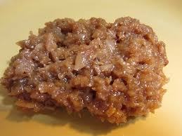

Welcome to my page about my favorite sweets. I love traditional belizeansweets!
| Snack/Candy Name | Main Ingredient | Favorite Rating |
|---|---|---|
| Tamarind Balls | Tamarind | 5/5 |
| Tableta | Coconut | 5/5 |
| Coconut Drops | Coconut | 5/5 |

1. Mix tamarind pulp with sugar and salt.
2. Shape the mixture into small balls.
3. Let them dry in the sun or under a fan.

1. Mix grated coconut with condensed milk and vanilla extract.
2. Pour the mixture into a mold and let it set in the refrigerator.

1. Boil sugar and water until it reaches a syrupy consistency.
2. Add grated coconut to the syrup and mix well.
3. Drop spoonfuls of the mixture onto a greased surface and let them cool and harden.